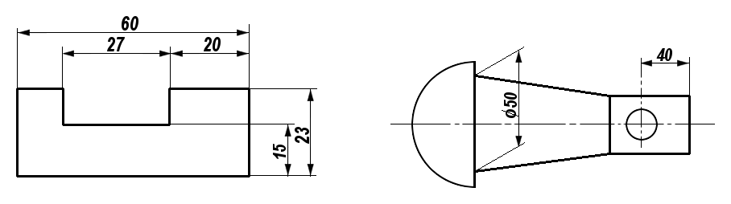
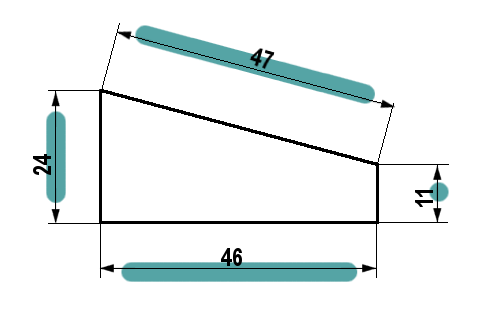
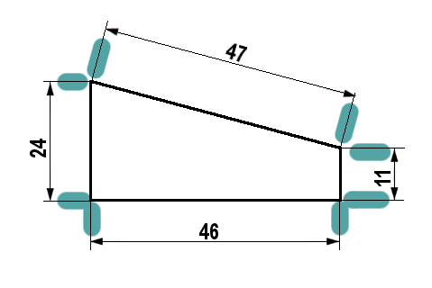
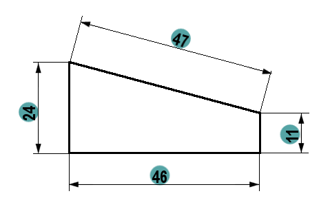

¡Estupendo! Pasemos a la acotación. Es el paso lógico y fundamental para que un plano sea útil de verdad.
Como habíamos comentado, una vez dibujadas las vistas (alzado, planta y perfil), nos falta la información más importante para poder fabricar el objeto: sus medidas exactas. A este proceso de añadir las medidas a un plano se le llama acotar.
Capítulo 6: La Acotación (poniendo las medidas)

Ya sabemos representar la forma de un objeto con sus vistas, pero para que alguien pueda construirlo, necesitamos indicar sus dimensiones reales.
Acotación
La acotación es el proceso de añadir las medidas a un dibujo técnico siguiendo un conjunto de reglas o normas para que cualquiera pueda interpretarlas correctamente.
El objetivo es que el plano tenga la información mínima, suficiente y adecuada para su fabricación.
5.1. Elementos de una Cota
Para acotar, utilizamos una serie de elementos que siempre son los mismos:
- Línea de cota: Es una línea fina y continua, paralela a la medida que estamos indicando. Se dibuja a unos 8 mm de la arista del objeto.
- Cifra de cota: Es el número que indica la medida real del objeto en milímetros (mm), aunque no se escriben las unidades. Se coloca encima y en el centro de la línea de cota.
- Líneas auxiliares de cota: Son líneas finas que parten de la pieza y delimitan la línea de cota. Sobresalen un poco (2-3 mm) de la línea de cota.

- Flechas de cota: Son los extremos de la línea de cota. Todas las flechas de un mismo dibujo deben ser iguales.
- Símbolos: A veces, la cifra de cota va acompañada de un símbolo para dar más información. Los más comunes son:
- R para indicar el radio de un arco.
- ⌀ para indicar el diámetro de una circunferencia.
Vamos a profundizar un poco más en cada elemento.

5.1.1. Línea de cota
Sirven para "soportar" las cifras que indican las medida. Encima de ellas colocaremos la cifra que indica la dimensión de esa medida, por lo que las líneas de cota suelen tener la misma longitud que la arista que se va a acotar.
Reglas Esenciales para las Líneas Auxiliares de Cota
-
Cómo dibujar las líneas (Apariencia): Las líneas que indican la medida (líneas de cota) deben dibujarse finas y continuas. De esta manera, se distinguen claramente de las líneas que forman el objeto.
-
Dirección de la medida (Paralelismo): Las líneas de cota se deben colocar paralelas a la arista del objeto que se quiere medir.
-
Ubicación y separación: Las cotas se deben situar, preferiblemente, en el exterior de la pieza. La primera línea de cota debe estar separada del objeto una distancia considerable (alrededor de 8 mm) para que la cifra de cota sea legible.
-
Final de la línea (Terminación): Las líneas de cota terminan en flechas (triángulos isósceles). Si el espacio es muy pequeño, las flechas pueden cambiarse por un punto.
-
Prohibiciones (Interferencia y Ejes): Es una norma esencial que las líneas de cota no deben cruzarse entre sí. Además, nunca se deben utilizar los ejes o las aristas del objeto como si fueran líneas de cota.

5.1.2. Línea auxiliar de cota
Es la línea que marca los límites de la línea de cota, nos indica en donde empieza la medida y en donde acaba Es una línea fina perpendicular a la superficie a medir y, de la misma forma, perpendicular a la línea de cota.
Reglas Esenciales para las Líneas Auxiliares de Cota
- Trazado y Apariencia: Se deben dibujar con las mismas características que las líneas de cota: con línea llena, continua y fina.
- Dirección (Perpendicularidad): Estas líneas son generalmente perpendiculares (forman 90 grados) a las líneas de cota. Excepcionalmente, en algunos casos, pueden trazarse a 60º.
- Función de Extensión: Se utilizan partiendo de las aristas de la pieza o de sus extremos. Son necesarias cuando las líneas de cota no pueden colocarse justo entre los bordes del objeto.
- Longitud de Sobrante: Para que sean visibles, deben sobrepasar la línea de cota que delimitan. Deben superar la línea de cota unos 2 mm.
- Uso de Ejes como Referencia: Las líneas de eje (las que marcan el centro de figuras circulares o simétricas) pueden aprovecharse como líneas auxiliares de cota.
- Prohibición de Corte: Para mantener la claridad del dibujo, las líneas de cota y las líneas auxiliares de cota no deben cortarse. (Aunque las líneas auxiliares sí pueden cruzarse entre sí, si es necesario, siempre que se evite dicho cruce cuando sea posible).

5.1.3. Cifra de cota
Es el número que marca la medida. Tiene que ser claro para que no exista la posibilidad de error. Tiene que estar apoyado sobre la línea de cota.
Reglas Esenciales para las Cifras de Cota
- El Valor es la Realidad: La cifra siempre debe indicar la medida real de la longitud del objeto, sin importar si el dibujo está ampliado o reducido.
- Tamaño y Uniformidad: Los números deben tener una altura uniforme y clara. Se recomienda que tengan una altura aproximada de 3 a 4 mm para que se lean bien (y nunca menos de 2,5 mm).
- Unidad Única: Todas las medidas de un mismo dibujo deben expresarse en la misma unidad, que generalmente son los milímetros (mm). Si tienes que usar otra unidad, se debe indicar justo después de la cifra.
- Posición Fija: Las cifras se colocan siempre encima de la línea de cota. Su base debe ser paralela a dicha línea.
- Ubicación Preferida: Siempre que sea posible, el número debe estar dentro de las líneas auxiliares de cota. Si el espacio es muy pequeño, la cifra se coloca por fuera.
- Organización Vertical: Si tienes varias cotas puestas una sobre la otra, deben colocarse de forma ordenada y alineada.
- ¡Prohibido Cruzar! Por claridad, la cifra no debe ser separada ni cruzada por ninguna línea. Tampoco se debe colocar sobre los bordes o aristas del dibujo.
5.1.4. Flecha de cota
Es el elemento donde finaliza las líneas de cota. Sirve para indicar de donde a donde llega la dimensión de esa cota, aunque no siempre finaliza en flecha. Como se ve más detalladamente en los ejemplos de abajo, hay otros elementos que sustituyen a las flechas.
La flechas de cota tienen forma de triángulos isósceles de una longitud L de unos 3 mm ; el ángulo desigual de dicho triángulo es de 15º.
Reglas Esenciales para dibujar las Flechas de Cota
- Terminación Estándar: Cada línea de cota debe acabar en dos flechas situadas en los extremos. Estas flechas generalmente tienen la forma de un triángulo isósceles y se rellenan.
- Ángulo Correcto: El ángulo que forman los lados de la punta de la flecha debe ser de 15º.
- Tamaño y Uniformidad: Todas las flechas que dibujes en el plano deben ser iguales (mantener una longitud uniforme).
- Ubicación Principal: Siempre que sea posible, las flechas se colocan por dentro de las líneas auxiliares de cota (las que salen de la pieza). Si no hay suficiente espacio (porque la medida es muy pequeña), se colocan por fuera de esas líneas.
- Alternativa por Falta de Espacio: Si la distancia a acotar es tan pequeña que las flechas quedan "muy juntas" y no caben, se deben sustituir por puntos.
- Dibujos Especiales: En los planos de construcción y estructuras metálicas, en lugar de flechas rellenas, a veces se utiliza un trazo inclinado de 45º.
5.2. Reglas básicas para acotar
Para que todo el mundo entienda las medidas, debemos seguir unas normas fundamentales:
- No repetir cotas: Una medida solo se debe indicar una vez en todo el plano. No se debe acotar la misma distancia en el alzado y en la planta, por ejemplo.
- Colocar las cotas fuera de la figura: Siempre que sea posible, las cotas se sitúan en el exterior del dibujo.
- Usar la vista más adecuada: Cada cota se debe colocar en la vista que mejor represente esa parte del objeto.
- No cruzar las líneas de cota: Las líneas de cota no deben cruzarse entre ellas ni con otras líneas del dibujo.
- No acotar sobre líneas ocultas: No se deben poner medidas sobre partes del objeto que no se ven directamente.
Ahora que conocemos las reglas básicas, imagina que tienes las vistas (alzado, planta y perfil) de un cubo que mide 40 mm de lado.
Si tuvieras que acotar el cubo, ¿qué tres medidas (alto, ancho y profundo) pondrías y en qué vista colocarías cada una para no repetir ninguna?